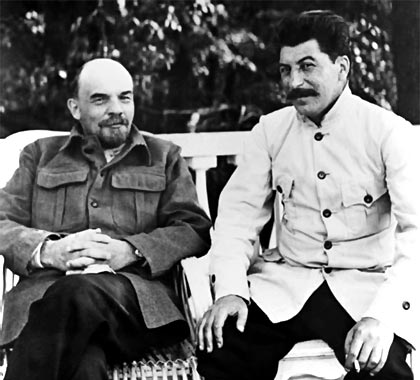

Biograf�a de Stalin
 Dirigente sovi�tico que gobern� f�rreamente la URSS desde 1929 (a�o en que se erigi� como sucesor de Lenin tras el exilio de Trotsky) hasta su fallecimiento en 1953. Al precio de una represi�n sanguinaria y de inmensos sacrificios impuestos a la poblaci�n, Stalin logr� convertir la Rusia semifeudal en una potencia econ�mica y militar capaz de contribuir decisivamente a la victoria aliada en la Segunda Guerra Mundial (1939-1945).
Dirigente sovi�tico que gobern� f�rreamente la URSS desde 1929 (a�o en que se erigi� como sucesor de Lenin tras el exilio de Trotsky) hasta su fallecimiento en 1953. Al precio de una represi�n sanguinaria y de inmensos sacrificios impuestos a la poblaci�n, Stalin logr� convertir la Rusia semifeudal en una potencia econ�mica y militar capaz de contribuir decisivamente a la victoria aliada en la Segunda Guerra Mundial (1939-1945).
En el nuevo orden de la posguerra, los Estados Unidos y la URSS se repartieron �reas de influencia; Stalin extendi� su poder instaurando reg�menes comunistas en la Europa del Este y alent�ndolos en otros pa�ses. El choque de intereses e ideolog�as dio lugar a la �guerra fr�a� entre ambas superpotencias, que continu� tras la muerte de Stalin; de hecho, el clima de tensi�n entre los bloques capitalista y comunista definir�a el escenario internacional hasta la disoluci�n de la URSS en 1991.
Stalin
| Fecha de nacimiento: | 18 de diciembre de 1878, Gori, Georgia |
| Fallecimiento: | 5 de marzo de 1953, Kuntsevo Dacha |
| Nombre completo: | Iosif Vissari�novich Dzhugashvili |
| Apodo: | Uncle Joe |
| Residencia: | - Narym
- Turujansk
- Solvychegodsk
- San Petersburgo
- Bak�
|
| Hijos: | - Vasili Dzhugashvili
- Svetlana Alil�yeva
- Y�kov Dzhugashvili
- Artem Sergeev
|

Biograf�a
Iosif Dzhugashvili era hijo de un zapatero pobre y alcoh�lico de la regi�n cauc�sica de Georgia, sometida a la Rusia de los zares. Qued� hu�rfano muy temprano y estudi� en un seminario eclesi�stico, de donde fue expulsado por sus ideas revolucionarias (1899). Se uni� entonces a la lucha clandestina de los socialistas rusos contra el r�gimen zarista; cuando en 1903 se escindi� el Partido Socialdem�crata, sigui� a la facci�n bolchevique que encabezaba Lenin.
Fue un militante activo y perseguido hasta el triunfo de la Revoluci�n bolchevique de 1917, �poca de la que procede su sobrenombre de Stalin (�hombre de acero�). La lealtad a Lenin y la falta de ideas propias le permitieron ascender en la burocracia del partido (rebautizado como Partido Comunista), hasta llegar a secretario general en 1922.
Stalin emprendi� entonces una pugna con Trotsky por la sucesi�n de Lenin, que, ya muy enfermo, morir�a en 1924. Aunque el l�der de la Revoluci�n hab�a indicado su preferencia por Trotsky (pues consideraba a Stalin �demasiado cruel�), Stalin maniobr� aprovechando su control sobre la informaci�n y sobre el aparato del Partido, ali�ndose con Zinoviev y K�menev hasta imponerse a Trotsky. La lucha por el poder se disfraz� de argumentos ideol�gicos, defendiendo cada bando una estrategia para consolidar el r�gimen comunista: la construcci�n del socialismo en un solo pa�s (Stalin) contra la revoluci�n permanente a escala mundial (Trotsky).
Stalin y Lenin (Gorki, 1922)
 Pero el verdadero m�vil de Stalin era la ambici�n de poder: una vez apartado Trotsky (al que mand� al exilio en 1929 y luego hizo asesinar en 1940), se desembaraz� tambi�n del ala �izquierda� del partido (Zinoviev y K�menev, ejecutados en 1936) y del ala �derecha� (Bujarin y Rikov, ejecutados en 1938) e instaur� una sangrienta dictadura personal, apropi�ndose de las ideas pol�ticas que hab�an sostenido sus rivales.
Pero el verdadero m�vil de Stalin era la ambici�n de poder: una vez apartado Trotsky (al que mand� al exilio en 1929 y luego hizo asesinar en 1940), se desembaraz� tambi�n del ala �izquierda� del partido (Zinoviev y K�menev, ejecutados en 1936) y del ala �derecha� (Bujarin y Rikov, ejecutados en 1938) e instaur� una sangrienta dictadura personal, apropi�ndose de las ideas pol�ticas que hab�an sostenido sus rivales.
Bandera de la USSR
La URSS bajo Stalin
Stalin gobern� la Uni�n Sovi�tica de forma tir�nica desde los a�os treinta hasta su muerte, implantando el r�gimen m�s totalitario que haya existido jam�s; pero tambi�n hay que atribuirle a �l la realizaci�n del proyecto socioecon�mico comunista en Rusia, la extensi�n de su modelo a otros pa�ses vecinos y la conversi�n de la URSS en una gran potencia.
Radicalizando las tendencias autoritarias presentes entre los bolcheviques desde la Revoluci�n, acab� de eliminar del proyecto marxista-leninista todo rastro de ideas democr�ticas o emancipadoras: anul� todas las libertades, neg� el m�s m�nimo pluralismo y aterroriz� a la poblaci�n instaurando un r�gimen policial. Dispuesto a eliminar no s�lo a los discrepantes o sospechosos, sino a todo aquel que pudiera poseer alg�n prestigio o influencia propia, lanz� contra sus compa�eros comunistas sucesivas purgas que diezmaron el partido, eliminando a la plana mayor de la Revoluci�n.
Con la misma violencia impuso la colectivizaci�n forzosa de la agricultura, hizo exterminar o trasladar a pueblos enteros como castigo o para solucionar problemas de minor�as nacionales, y someti� todo el sistema productivo a la estricta disciplina de una planificaci�n central obligatoria. Con inmensas p�rdidas humanas consigui�, sin embargo, un crecimiento econ�mico espectacular, mediante los planes quinquenales: en ellos se daba prioridad a una industrializaci�n acelerada, basada en el desarrollo de los sectores energ�ticos y la industria pesada, a costa de sacrificar el bienestar de la poblaci�n, sometida a dur�simas condiciones de trabajo y a grandes privaciones en materia de consumo.
La represi�n imped�a que se expresara el malestar de la masa trabajadora, apenas compensada con la mejora de los servicios estatales de transporte, sanidad y educaci�n. A este precio conseguir�a Stalin convertir a la Uni�n Sovi�tica en una gran potencia, capaz de ganar la Segunda Guerra Mundial (1939-1945) y de compartir la hegemon�a con los Estados Unidos en el orden bipolar posterior.
�ndice
La Revoluci�n Rusa
Biograf�a de Lenin
Stalin, Roosevelt y Churchill en la Conferencia de Teher�n (1943)